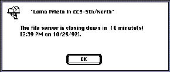

|
|
Concern for Other UsersWhen people work in groups, sharing information among computers over networks, usually one person controls some resource that other people are using simultaneously. A shared resource may be a document with data in it, an application, a storage medium, or some other resource. The user in control of the shared resource needs to be aware of the consequences to other current users, particularly in situations in which the user in control wants tocease sharing or disconnect other users from the shared resource. Create a structure that allows clear communication about the shared resource between the users in a group. Figure 2-8 shows an example of a message that users receive when they are connected to a file server that is closing down. Receiving such a message allows them to finish up their work and disconnect without losing any data.  |